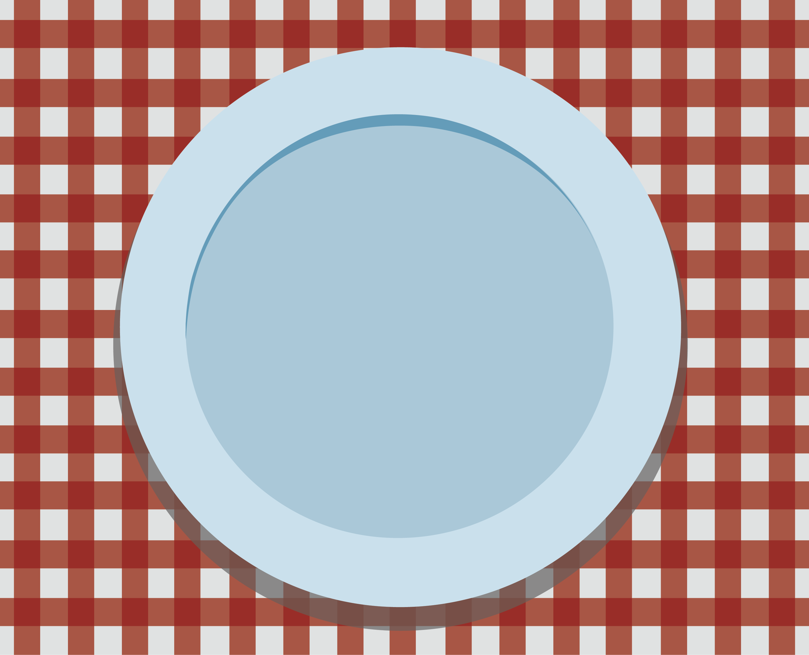
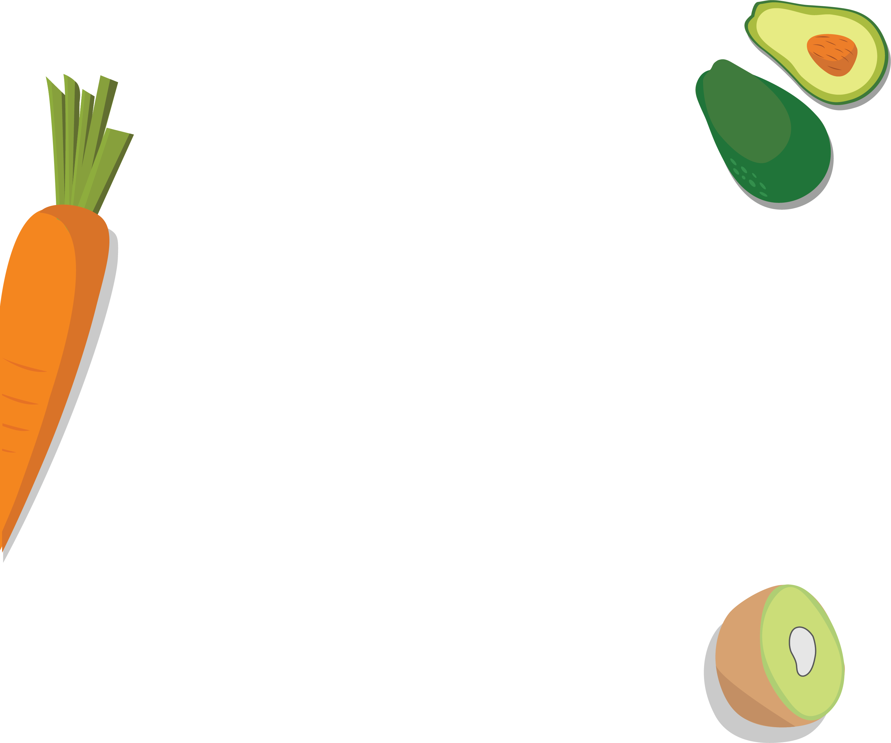
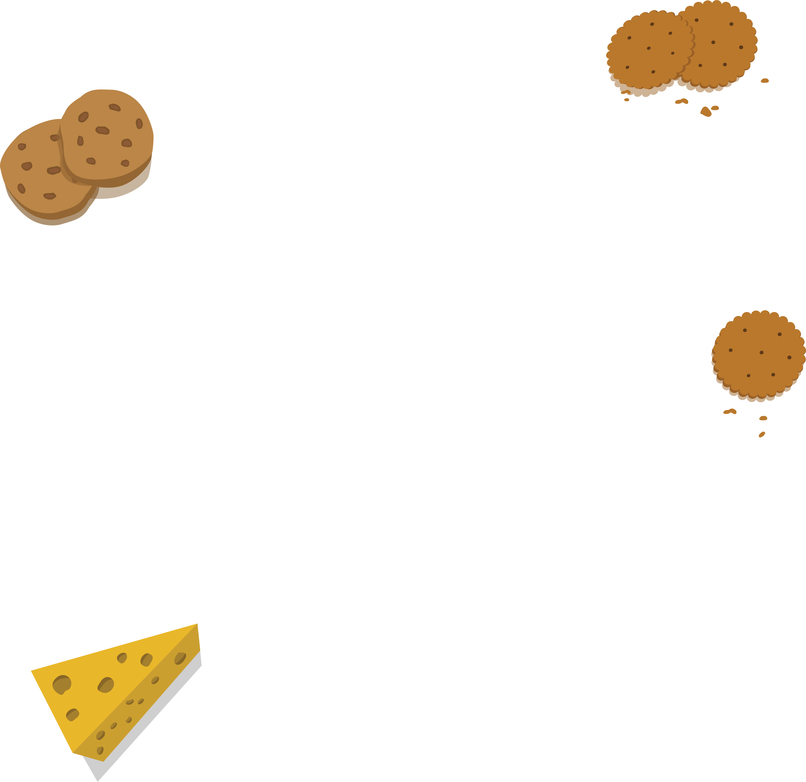

In the '70s and '80s, New Age Boomers
pioneered the idea that people should
pay attention to what they consume
and how they consume it.

Generation X later brought foodie
culture into the world and expanded
the definition of fine food to include
mundane fare like cheese and crackers,
welcoming ethnic options
Today's foodie generation love sharing
experiences with their friends at the
table as well as on social media. The
culture is also conventional and not
risky to them.